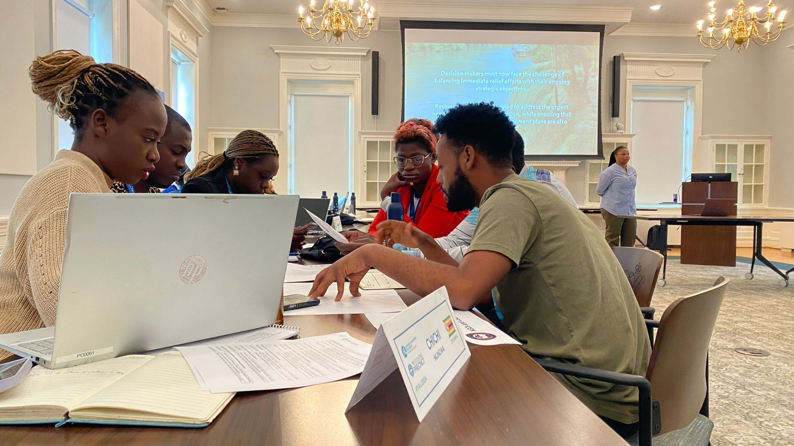
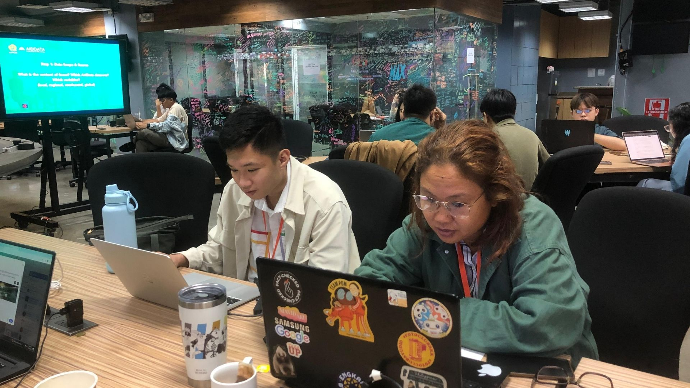
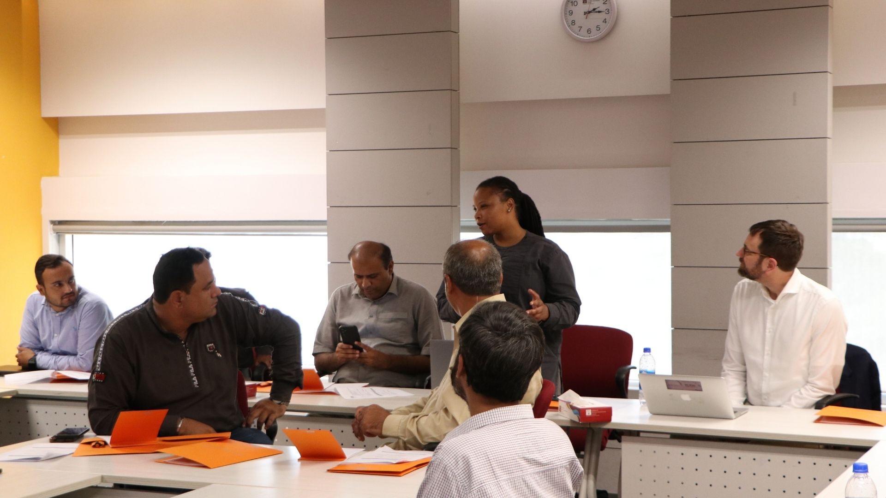
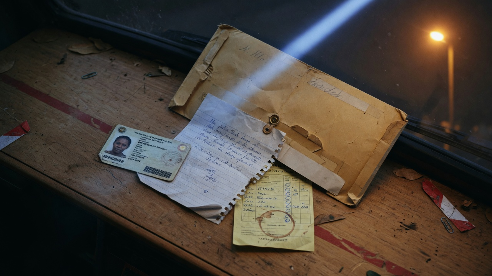
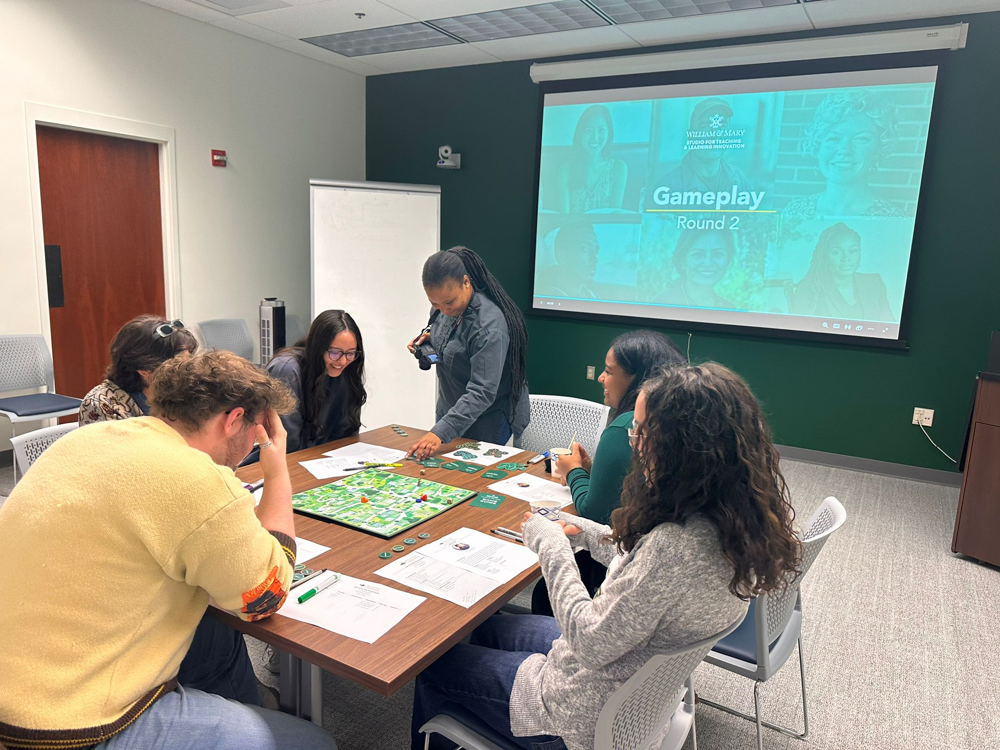

I design simulations and serious games that make complex policy systems legible through experience. My practice spans physical board games, facilitated live-action scenarios, and custom digital platforms. Each learning experience is built to translate empirical research into engaging and consequential play. Audiences have included government officials, journalists, researchers, and development practitioners across Africa, Asia, and the United States.





A high-stakes multi-party negotiation simulation set in the fictional Republic of Kavala, a lower-middle-income African state facing imminent Eurobond default. Four delegations — Kavala's government, China's bilateral lender, the Paris Club, and the IMF — negotiate a restructuring framework under a hard deadline. Every mechanic encodes a real contractual feature from AidData's flagship research on Chinese sovereign lending: confidentiality clauses create structural information asymmetry, lender-controlled escrow accounts distort debt sustainability figures, and “no Paris Club” provisions constrain multilateral coordination by design. Neither agreement nor deadlock is predetermined.
Participants step into the roles of government officials, community leaders, and NGO representatives in Firania, a fictional nation under compound pressure. Teams analyze real development datasets, negotiate across competing interests, and make resource allocation decisions under time constraints — then adapt when injected crises (natural disaster, corruption scandal) invalidate prior plans. First delivered to the 2024 Mandela Washington Fellows cohort at Presidential Precinct; reprised for the 2025 cohort.
An upcoming, contextually adapted iteration of the Data Command scenario designed for the Global Democracy Fellows cohort. Participants take on roles of decision-makers navigating a complex governance environment, using data to diagnose systemic challenges and negotiate responses across competing institutional interests. The scenario is calibrated to democracy and governance concerns, with crisis injections that test how evidence holds up under political pressure.
Participants become data detectives investigating development financing patterns across a selected country from 2000–2021. Working in specialized teams — Environmental Impact, Social Heritage, Economic Investment, or Infrastructure — participants dig into AidData datasets using a proven four-step methodology. Raw numbers are transformed into compelling visual stories that reveal trends, inconsistencies, and insights for real audiences. Teams present discoveries and defend analytical choices.
A fictional country's “Schools for Every Child” programme promised hundreds of new classrooms in underserved communities. A whistleblower has uncovered evidence of widespread mismanagement — and participants are the investigative team. Five specialist units work concurrently: Community Impact, Construction Oversight, Financial Crimes, Geographic Justice, and Procurement. Teams analyze JSON-format government datasets, cross-reference findings, and build a composite story no single team could construct alone.
The interface is a fully functional Mac-style desktop environment: a USB drive holds all investigation files, a built-in calculator supports on-the-fly analysis, and an email system delivers whistleblower communications. Participants enter through team-specific access codes that determine their data scope.
The AfCFTA has built impressive legal capacity for intra-African trade — but fewer than 20% of African SMEs have ever attempted to export. The barrier is not ambition; it is capability: the operational ability to move goods through documentation requirements, unofficial levies, and systemic friction. Beitbridge makes that distinction experiential.
The player embodies Amara, a Zimbabwean smallholder trader crossing into South Africa with a $480 float and agricultural goods. Capital and hours lost are tracked in real time. Every decision point encodes a documented non-tariff barrier; the end state surfaces the AfCFTA NTB Online Mechanism — 1,911 registered users across 54 nations — as proof that the tools exist, but only reach those already inside the system. Grounded in Nguna (2026), African Liberty.
A multi-actor geopolitical simulation platform built on a custom React / TypeScript / Leaflet stack with enriched GeoJSON spatial data. Players navigate competing spheres of influence across the Sahel region, managing resources, alliances, and intervention decisions across an interactive map interface. Actor dialogue systems present context-sensitive choices; each decision propagates consequences through the simulated political environment. Designed to make the structural dynamics of African geopolitics legible to policy audiences through active engagement rather than lecture.
An original educational board game designed as a pedagogical intervention for the ‘Economics of Identity: Race, Class, Caste & Gender’ course at William & Mary. Players navigate an economic simulation in which identity functions as a structural variable, shaping resource access, opportunity costs, and systemic outcomes. Playtested with W&M students in 2024. Awarded the William & Mary Learn, Discover, Innovate Grant. Presented at the W&M Teaching & Learning Symposium 2025.